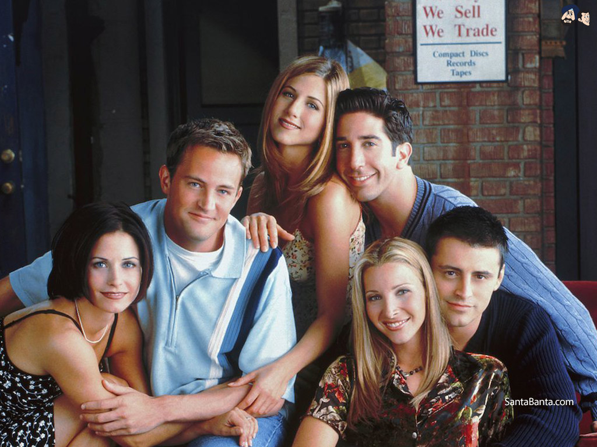

F.R.I.E.N.D.S
Friends is an American television sitcom created by David Crane and Marta Kauffman,
which aired on NBC from September 22, 1994, to May 6, 2004, lasting ten searons. With an ensemble
cast starring Jennifer Aniston, Courtney Cox, Lisa Kudrow, Matt LeBlanc, Matthew Perry and David Schwimmer,
the show revolves around six friends in their 20s and 30s who live in Manhattan, New York City.
Filming
took place at Warner Bros. Studios in Burbank, California. The show ranked within the top ten of the
final television seasons ratings; it ulitmately reached the number-one spot in its eighth season. The series
final aired on May 6, 2004, and was watched by around 52.5 million American viewers, making i tht fifth-most-watched
series finale in television history and the most-watched television episode of the 2000s.
Premise
Rachel Green (Jennifer Aniston), a sheltered but friendly woman, flees her wedding day and wealthy yet unfulfilling life and finds childhood friend Monica Geller (Courtney Cox), a tightly wound but caring chef. Rachel becomes a waitress at West Village coffee house Central Perk after she moves into Monika's apartment above Central Perk and joins Monica's group of single friends in theri mid-20s: previous roommate Phoebe Buffay (Lisa Kudrow), an eccentric masseuse and musician; neighbour Joey Tribbiani (Matt LeBlanc), a dim-witted yet loyal struggling actor and womanizer; Joey's roommate Chandler Bing (Matthew Perry), a sarcastic self-deprecating data processor; and Monica's older brother and Chandler's college roommate Ross Geller (David Schwimmer), a sweet-natured but insecure paleontologist.
Source: Wikipedia